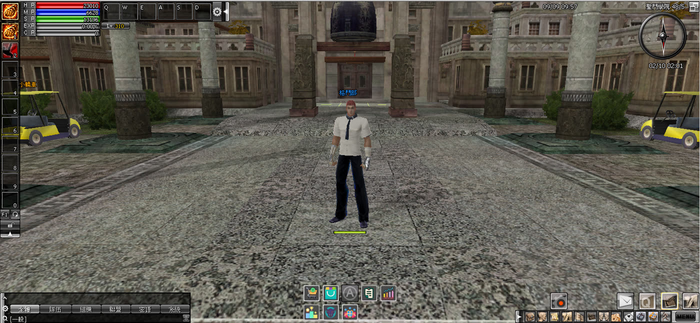

跳到功能選擇
玩家功能導覽
NEW YONG CLASSIC EP9 · PLAYER DATABASE
從介面位置快速找到功能
核心圖鑑
收藏圖鑑
奧義技能
功能導覽
預覽測試區・正式內容請以主站為準
PLAYER FEATURE GUIDE
玩家功能導覽
從遊戲介面找到功能入口，再用短片掌握實際操作。
七個主要功能・第一批預覽
導
01
入口在哪裡？
本批功能集中在畫面中央下方

七個主要功能入口
點此查看操作教學
02
選擇功能
點選名稱後切換實機操作與說明
載入功能資料中…
03
下一批功能
等待實機操作素材
自動喝水
工匠合成
外觀系統
任務自動引導
請啟用 JavaScript，以切換功能與播放教學影片。